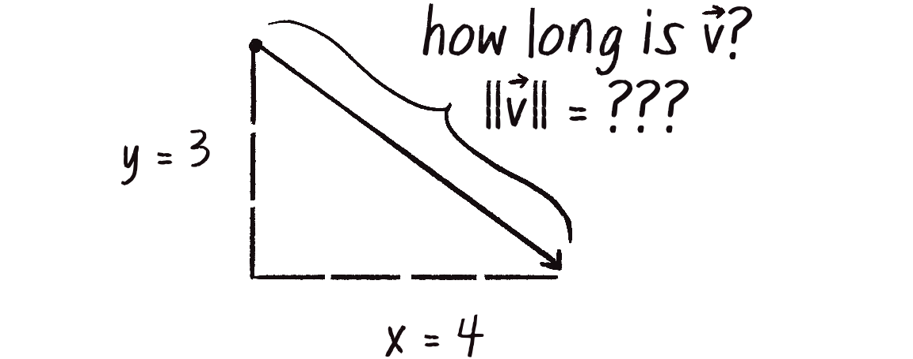
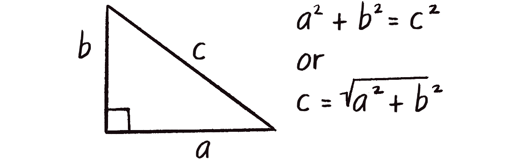
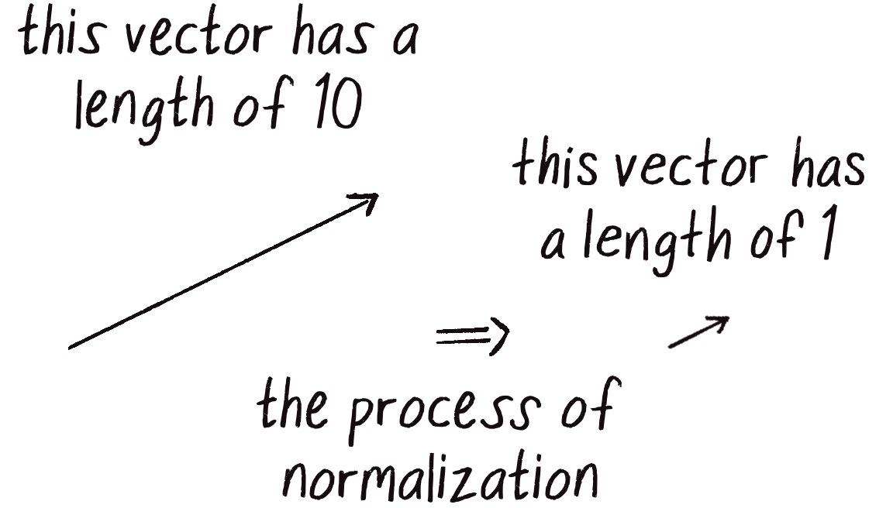
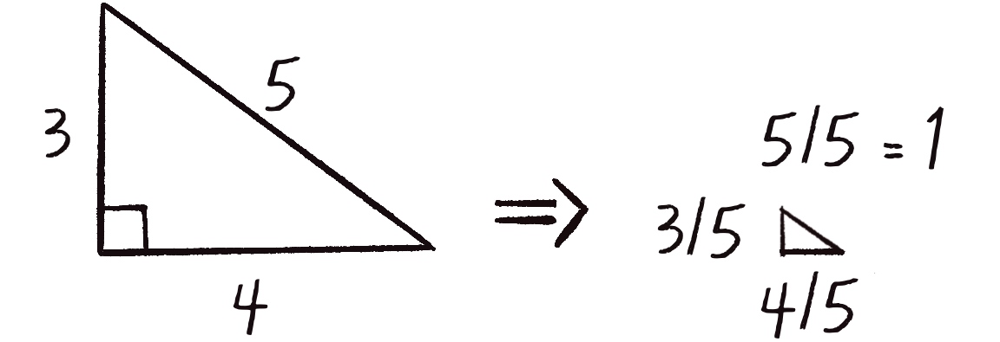

Vektör Büyüklüğü (Magnitude)
Bir vektörün büyüklüğü (magnitude) onun uzunluğudur. (3, 4) vektörünün uzunluğu ne kadar? Pisagor teoremi ile bulabiliriz!

v.mag() ile hesaplanır.
Pisagor Teoremi (Pythagorean Theorem)
Bir vektörü (x, y) çizdiğimizde aslında bir dik üçgen oluşur:

let v = createVector(3, 4);
// Manuel hesaplama
let magnitude = sqrt(v.x * v.x + v.y * v.y); // 5
// p5.js ile
let magnitude = v.mag(); // 5Koordinat Dönüşümleri (Transformations)
Vektörlerle çalışırken sıklıkla translate() ve rotate() fonksiyonlarını
kullanırız. Bu fonksiyonlar koordinat sistemini değiştirerek çizimi kolaylaştırır.
translate() - Orijini Kaydırma
translate(x, y) koordinat sisteminin orijinini (0, 0) noktasını
belirtilen konuma taşır. Bu, özellikle merkez etrafında çizim yaparken çok kullanışlıdır.
// Normalde (0,0) sol üst köşedir
line(0, 0, 100, 50); // Sol üstten başlar
// translate ile orijini merkeze taşı
translate(width / 2, height / 2);
// Artık (0,0) ekranın merkezinde!
line(0, 0, 100, 50); // Merkezden başlar💡 Neden translate() Kullanırız?
Vektörleri genellikle orijinden başlayarak çizeriz. Eğer vektörü ekranın
ortasında göstermek istiyorsak, her çizimde width/2 ve height/2
eklemek yerine, bir kez translate(width/2, height/2) diyerek işimizi kolaylaştırırız.
rotate() - Koordinat Sistemini Döndürme
rotate(angle) koordinat sistemini belirtilen açı kadar döndürür.
Açı radyan cinsinden verilir (derece değil!).
// Açıyı radyana çevir
let angle = radians(45); // 45 derece = 0.785 radyan
translate(width / 2, height / 2); // Orijini merkeze taşı
rotate(angle); // 45 derece döndür
// Artık tüm çizimler 45 derece döndürülmüş!
line(0, 0, 100, 0); // Yatay çizgi artık çapraz görünür⚠️ Dönüşüm Sırası Önemli!
translate() ve rotate() çağrılarının sırası sonucu değiştirir.
Genellikle önce translate, sonra rotate yapılır.
// Doğru sıra: önce taşı, sonra döndür
translate(200, 200);
rotate(angle);
// push/pop ile değişiklikleri izole et
push();
translate(100, 100);
rotate(PI / 4);
rect(0, 0, 50, 50); // Döndürülmüş kare
pop();
// Burada koordinat sistemi normale döndümag() Kullanımı
mag() vektörün uzunluğunu döndürür. İşte kitaptan bir örnek:
Kodun Açıklaması:
mouse.sub(center) - Merkezden fareye olan vektörü hesaplıyoruz.
Bu işlem mouse vektörünü değiştirir!
mouse.mag() - Vektörün uzunluğunu (büyüklüğünü) alıyoruz.
Bu değer farenin merkeze olan mesafesidir.
translate(width/2, height/2) - Orijini merkeze taşıyoruz,
böylece vektörü (0,0)'dan çizebiliriz.
mag() Kullanım Alanları:
velocity.mag()
if (v.mag() > maxSpeed)
Normalize: Birim Vektör (Unit Vector)
Birim vektör, uzunluğu 1 olan vektördür. Sadece yön bilgisi taşır. Bir vektörü normalize etmek = birim vektöre dönüştürmek.


let v = createVector(3, 4);
console.log(v.mag()); // 5
v.normalize();
console.log(v.mag()); // 1
console.log(v.x); // 0.6 (3/5)
console.log(v.y); // 0.8 (4/5)💡 Neden Normalize?
Yönü bilip, büyüklüğü kendimiz belirlemek istediğimizde kullanırız. Örneğin: "Fareye doğru, her zaman aynı uzunlukta bir çizgi çiz"
İşte kitaptan pratik bir örnek:
Kodun Açıklaması:
normalize() vektörü birim vektöre (uzunluk=1) dönüştürür,
sonra mult(50) ile tam 50 piksel uzunluğa ayarlarız.
let direction = p5.Vector.sub(mouse, position);
direction.normalize(); // Sadece yön
direction.mult(5); // 5 piksel/frame hızsetMag() - Büyüklük Ayarlama
normalize() + mult() yerine doğrudan setMag() kullanabiliriz:
let v = createVector(3, 4); // büyüklük: 5
// Uzun yol
v.normalize(); // büyüklük: 1
v.mult(10); // büyüklük: 10
// Kısa yol
v.setMag(10); // doğrudan büyüklüğü 10 yaplimit() - Maksimum Hız (Limiting Magnitude)
limit() vektörün büyüklüğünü belirli bir değerle sınırlar.
Hız kontrolü için çok kullanışlı!
let velocity = createVector(10, 15);
console.log(velocity.mag()); // ~18
velocity.limit(5); // Maksimum 5
console.log(velocity.mag()); // 5 (sınırlandı)
// Eğer zaten 5'ten küçükse, değişmez
let slow = createVector(2, 1);
slow.limit(5); // slow aynı kalır (2.23 < 5)🔬 Deneyin:
-
Satır 23:
limit(3)yapın Beklenti: Daha yavaş maksimum hız -
Satır 23:
limit(15)yapın Beklenti: Daha hızlı hareket
📝 Bu Bölümün Özeti
- v.mag(): Vektörün uzunluğunu döndürür
- v.normalize(): Uzunluğu 1 yapar (birim vektör)
- v.setMag(n): Uzunluğu n yapar
- v.limit(max): Uzunluğu maksimum max ile sınırlar
- Pisagor: |v| = √(x² + y²)
- Birim vektör: Sadece yön, uzunluk 1